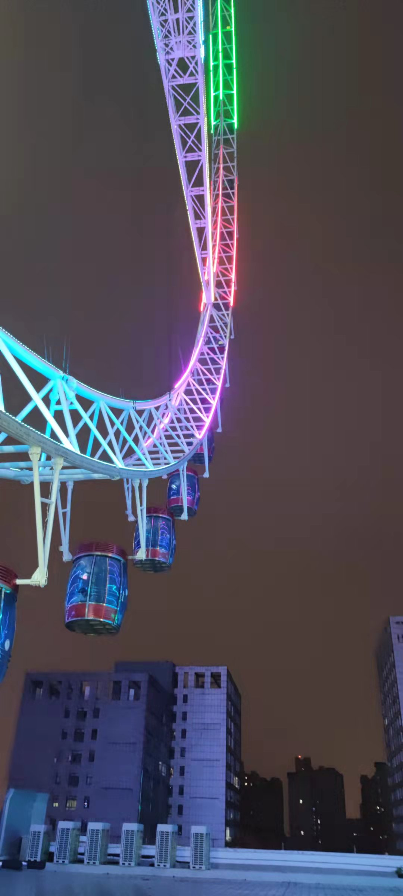
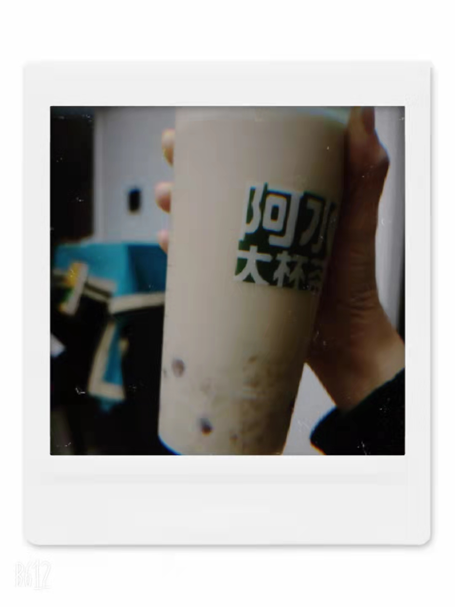

关于我
我叫刘羽辰，今年17岁，是北大医学部临床专业的大一学生。
图一是十月一之前的照片，放假回家鼓起勇气去烫了头发，现在是图二啦
我来自山东聊城
 我的家乡没有高楼林立的繁华，也没有小桥流水的古朴，它在许多许多的城市里，默默无闻也毫不起眼。但是，在我的记忆里，在我的心里，我的家乡，永远是最独特最宜居的地方。
这里有高高的摩天轮，有清澈的湖泊河流，有缤纷的花海,有美得平淡而又迷人的一年四季；有好吃的菜肴，有只有山东才有的奶茶，有说着熟悉乡音的亲切的人。
家乡就是在下火车的那一刻，就让我我感到我不是过客 ，而是归人